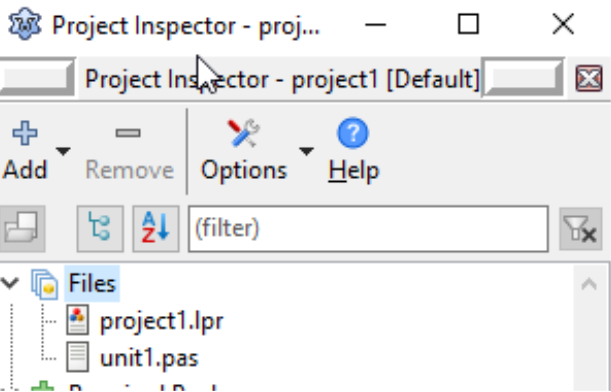
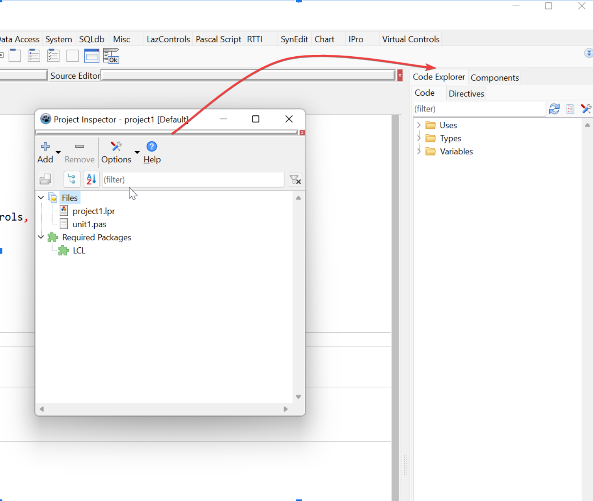
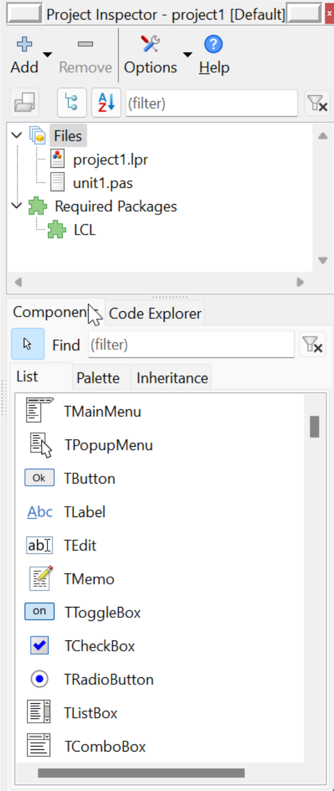
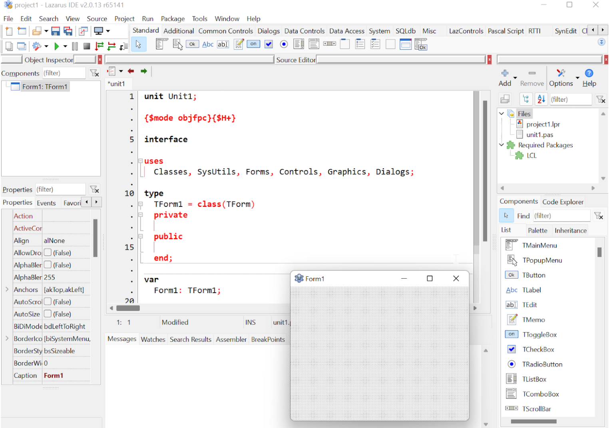

Usando o inspetor de projeto (Project Inspector)
Acesse o menu Project | Project Inspector (Projeto | Inspetor de Projetos). Inicialmente, uma janela flutuante e independente das demais será exibida:

Para melhorar seu fluxo de trabalho, realize a docagem na parte superior da IDE, onde se localiza a paleta de componentes, no lado direito:

Vale notar que essa docagem nem sempre é intuitiva. Minha recomendação técnica é realizar a "des-docagem" completa — deixando todas as janelas flutuantes — e então refazer o processo uma de cada vez até atingir a organização ideal:

Nesta configuração, o Inspetor de Projetos ocupa o topo, enquanto os painéis Code Explorer e Components compartilham o espaço inferior lado a lado.
Com o tempo e maior familiaridade com o Lazarus, você poderá ajustar essas posições conforme sua preferência. Esta estrutura reflete a melhor percepção de usabilidade que encontrei em meus anos de desenvolvimento. O resultado final será este:

Estamos avançando na otimização do ambiente. Faltam poucos ajustes e ainda há espaço para melhorias!